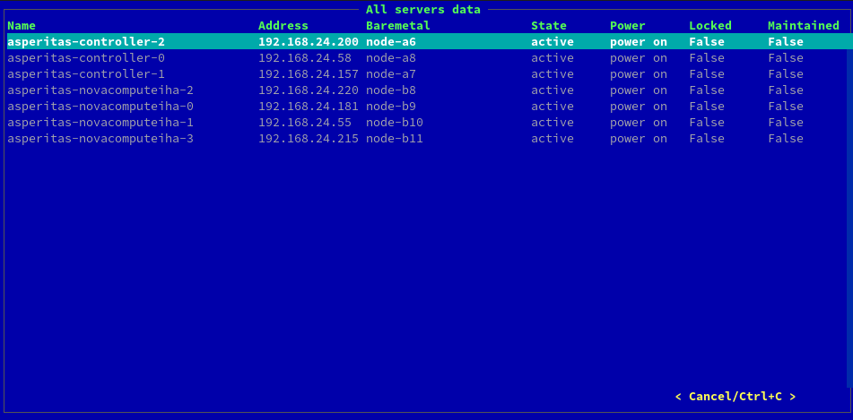

Сопровождение облака на базе дистрибутива Asperitas¶
Развёрнутые сервера (общий список)¶
Перейдите во вкладку Deployed servers.

При чистом старте это окно будет пустым. Так как в системе ещё не было создано ни одного сервера.
Развёрнутые сервера (список одного развёртывания)¶
Перейдите во вкладку Servers list.